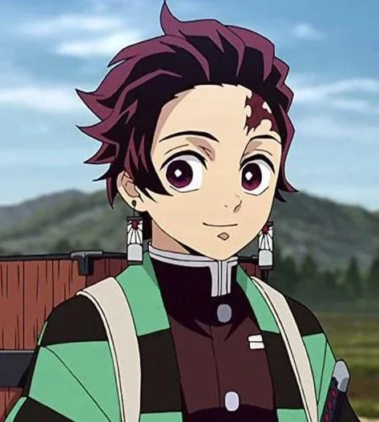
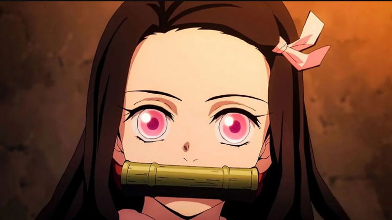
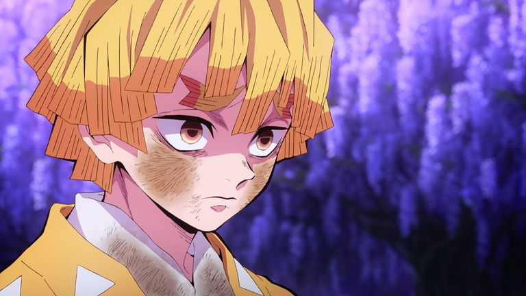
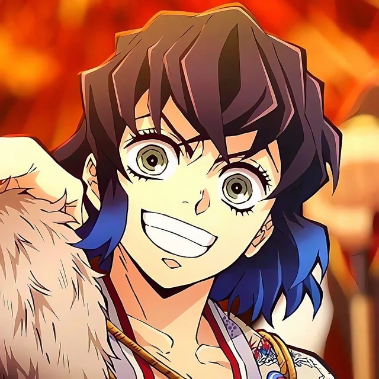

Tanjiro Kamado (竈門かまど 炭たん治じ郎ろう, Kamado Tanjirō) es el protagonista principal de Kimetsu no Yaiba. Es un cazador de Demonios cuyo principal objetivo es encontrar al responsable de haber matado a su familia y convertido a su hermana Nezuko en una Demonio y luego juró derrotar a Muzan Kibutsuji, el Rey de los Demonios, para evitar que otros sufran el mismo destino que él.

Tanjiro Kamado
Nezuko Kamado
Nezuko Kamado (竈門かまど禰ね豆ず子こ, Kamado Nezuko) es la hermana menor de Tanjiro. Ella fue transformada en Demonio por Muzan Kibutsuji acompañando a Tanjiro en su viaje para volver a ser humana. Es una de las protagonistas principales de Kimetsu no Yaiba.

Nezuko Kamado
Zenitsu Amagutsa
Zenitsu Agatsuma (我あが妻つま善ぜん逸いつ, Agatsuma Zen'itsu) es un Cazador de Demonios y un compañero de viaje de Tanjiro Kamado. A su vez es uno de los personajes principales de Kimetsu no Yaiba.

Zenitsu
Inosuke
Inosuke Hashibira (嘴はし平びら伊い之の助すけ, Hashibira Inosuke?) es uno de los personajes principales de la franquicia Kimetsu no Yaiba. Fue un Cazador de Demonios perteneciente al Cuerpo de Exterminio de Demonios, creador y único usuario conocido de la Respiración de la Bestia.

Inosuke
Muzan Kibutsuji
Muzan Kibutsuji (鬼き舞ぶ辻つじ無む惨ざん, Kibutsuji Muzan) es el antagonista principal de Kimetsu no Yaiba. Es un Demonio, siendo el primero en su clase, que ha vivido durante más de mil años, siendo como tal, el responsable del origen de los otros demonios, responsable de haber corrompido a Michikatsu Tsukiguni y ser quien asesinó a la familia de Tanjirō y Nezuko, convirtiendo a esta última en Demonio, siendo el desencadenante del deseo de venganza de Tanjirō hacia él.